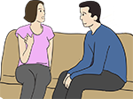

Module: Tips for families and caregivers
Laura Dyas LBSW, LPC, MA
Resources
Maintain a Symptom Binder
Keep track of your loved one’s treatment, such as medications, symptoms, results from blood and diagnostic and medical tests, etc. using a binder. A brochure you can print is available at:
http://www.scleroderma.org/site/DocServer/HC-Binder-Web.pdf?docID=315
Caregivers can help persons with scleroderma self-manage their disease. If you are a caregiver/family member of a person with scleroderma, you might want to look at the Self Advocacy module. Many of the suggestions in that module are useful to caregivers too. For example, encourage use of a system or binder to keep track of treatment such as medications, symptoms, results from blood and diagnostic and medical tests, etc. A brochure you can print is available at: http://www.scleroderma.org/site/DocServer/HC-Binder-Web.pdf?docID=315
- Learn all you can about scleroderma, its treatment and its management.
- Learn about scleroderma chapters and support groups that are available, and other useful resources such as the Scleroderma Foundation and the Scleroderma Research Foundation.
- Learn about your loved one’s medications, including what they do, instructions for taking them, and any side effects.
- Learn about the diagnostic and medical tests that your loved one has had or will have.
- Learn how to communicate with health professionals.
- Learn how to communicate with the person you are the caregiver for.
- Understand insurance and what is covered.
- Learn how to take care of yourself.
- Recognize your feelings.
- Prevent burnout.
Learn about scleroderma through the Scleroderma Foundation, Scleroderma Research Foundation, and support groups and resources
- The Scleroderma Research Foundation has a section for patients with information and resources: http://www.srfcure.org/for-patients
and a series of webinars on different topics related to scleroderma at http://www.srfcure.org/for-patients/webinars - The Scleroderma Foundation has educational information and resources for patients, caregivers and health professionals at www.scleroderma.org
- Participating in support groups or activities sponsored by chapters of the Scleroderma Foundation provides information about scleroderma and strategies to manage symptoms. Through participating in these activities, you and your loved one can also learn self-advocacy strategies.
- The Scleroderma Foundation has a list of state chapters and support groups at
http://www.scleroderma.org/site/PageServer?pagename=chapter_locator#.VbpsG1LbKos
Communicate with the person you are the caregiver for
As a caregiver to someone who has scleroderma, communication is critical and can be a daily struggle. Learning to effectively communicate can make a real difference in the way you manage your caregiver role. Here are some easy-to-remember tips about how to communicate with your loved one.
- Talk to the person you are the caregiver for. What are his or her expectations of you? What does that person want to do for himself or herself?
- Remember who makes the decisions. The person with scleroderma is the ultimate decision maker (unless someone else has power of attorney). Discuss options, but let them make the decisions.
- Be available when you are needed. Let the person know you are available, but let them decide if they want or need help.
- Respect the person with scleroderma’s need to be alone or not talk. Do not be offended; make sure the person knows you are always open to listening.
- Accept that you do not really understand how your loved one feels. Acknowledging that your loved one has a disease and that he or she will have very different feelings than you do about the disease is important. It is perfectly normal to have your own feelings about how scleroderma is touching your life. Your loved one will also have his or her feelings, and this is also very normal.
- Learn that you do not have to have all the answers. As a caregiver you may feel as if you need to provide your loved one with answers, solutions, and much-needed resources. You may even think that you are required to tend to all of his or her needs. This is simply not the case. What you do need to do is to openly communicate that you do not have all the answers, but you are willing to seek out answers by calling the Scleroderma Foundation, Scleroderma Research Foundation or a health professional. These individuals and organizations can assist you by providing both answers and resources. Being honest about your limitations can help you and your loved one maintain a stronger relationship.
- Don’t communicate when you are frustrated. Refraining from communicating with your loved one when either of you are frustrated, exceedingly tired or not feeling well is always a good rule to follow. Leave important discussions for times when you have had proper nutrition and enough sleep and are relaxed. This can lead to more effective communication.
- Be caring and understanding. Scleroderma patients can fatigue easily and often can be in pain. Patients often do not want family members to know that they are not feeling well, so they may not communicate their daily anguish. Look for signs that your loved one may not be feeling their best and offer to assist in the household chores, cook a meal or go out to dinner, do a load of laundry without being asked, or suggest that you would enjoy a quiet evening in front of the television instead of attending the family function that was planned. If you, as the caregiver, make these slight changes to the schedule, it will help your loved one not feel guilty about “ruining” your schedule.
- Show your encouragement. Encouragement can be shown in simple ways, and scleroderma patients want to know that even with fatigue and pain they are still able to enjoy a quality of life. Look for ways to modify activities for your loved one so that he or she can still enjoy a full and active life.
- Don’t lecture. There will be days when your loved one overdoes it and then has to rest. Resist the temptation to criticize and use the dreaded phrase, “I told you so.” Scleroderma patients know their limitations better than you do and they will test their limitations sometimes, maybe daily. It is part of living with a chronic disease. In your role as a caregiver you should avoid being judgmental and preachy. Rather, be unconditional in your praise for your loved one’s ability to continue living a full life.
- Allow your loved one to have a sad day. There will be good days with your loved one and there will be days that are not the best. This is expected and perfectly normal. Allow your loved one to own his or her feelings, embrace them, and act on them if needed. If you notice that your loved one is having a sad day, acknowledge it. Ask what you can do to make it better. Make positive suggestions as to what you might do, such as venture out on a short and fun outing doing something your loved one enjoys. Order take out, go to a movie, make a special dinner, or just sit next to your loved one and enjoy a TV show.
Communicating with doctors and other health professionals
As a caregiver it is important that you feel comfortable communicating with healthcare professionals. Here are some practical tips to help you and your loved one as you prepare for and go to physician visits.
- Write down your questions before you arrive for your appointment. This will help you and your loved one feel more confident that all of your needs will be adequately addressed.
- Keep accurate and updated records for your loved one. Whether you use a 3 x 5 card system, your smart phone, a note book, or file folders, use a system that works for your family. Make sure that all your notes are legible and filed in an easy-to-use system, and that the records are accessible to all family members in your absence. Categorize the records by specialty of physician, personal information, medication, insurance, legal documents, allergy, etc. Make it simple for someone else who is seeking out information about your loved one so they can find what they need quickly.
- Make yourself known to all of your loved one’s physicians. Letting others know who you are, what your role is, and that you have a vested interest in the quality of care that your loved one receives can be beneficial. If you want to speak to your loved one’s health professionals about the specifics of the person you care for, you will need the person’s written consent. Ask the health professional about the best way to do this.
- Prepare yourself both physically and emotionally for visits. Every physician visit can be draining on a caregiver. If your loved one requires your physical assistance, you will need energy to assist them. Getting plenty of rest will help you maintain good health. You will also need to be emotionally prepared to listen well to everything that is said during the visit. Taking notes is always a good idea. If you have a phone that allows for note taking this can be done quickly while you are listening, or you can bring a 3 x 5 card with you and keep a record of the important things that occurred during the visit. These notes can then be placed in your record keeping files.
- Don’t be afraid to ask questions if you do not understand something. As children we are often taught not to question authority figures. When we are in a physician’s office it is common to get nervous, forget our train of thought, and sometimes walk out feeling as if nothing was accomplished. This can result in feelings of despair and even anger. You are in control when you are at a physician’s office, so remember, if you do not understand something, politely ask questions. If the physician runs out of time during this visit, ask for a consultation time when you and your loved one can return and the entire visit can be devoted to having your questions answered. Don’t leave the office feeling as if you do not have your questions answered. Seek the answers or resources you need.
- Be respectful of your loved one. As a caregiver it can be difficult to communicate with a physician while your loved one is sitting directly in front of you. If there are critical details about the health of your loved one that you need to review with the physician, either have your loved one return to the waiting room, make a separate appointment for you to return without your loved one, or ask the nurse or physician if it is possible for you to schedule a time when you can address your concerns over the telephone privately. Above all, provide dignity and respect for the individual you are caring for.
- Don’t let anyone rush you to make decisions. When communicating with healthcare professionals, do not allow anyone to rush you to make a decision. Take the time you need to make well-educated decisions together with your loved one. Get feedback from other family members, call a local chapter of a scleroderma support group and seek out their advice, get additional resources or, if needed, obtain a second opinion. If you are not comfortable with a physician, you can seek out the services of another physician who can better meet the needs of your loved one. You are in control, and it is important that both your loved one and you, as the caregiver, feel comfortable with medical professionals.
- Ask your health care professional for more information on medications. Know why each medication is prescribed and what each is supposed to do. Ask questions about the dose for each medication and how it is taken. Learn the medication’s side effects and reactions of the medication.
Insurance coverage
- Read the insurance policy for your loved one. Know what is covered. Call the insurance company and ask questions.
- Information about appealing health insurer decisions can be found at
http://www.hhs.gov/healthcare/rights/appeal/appealing-health-plan-decisions.html.